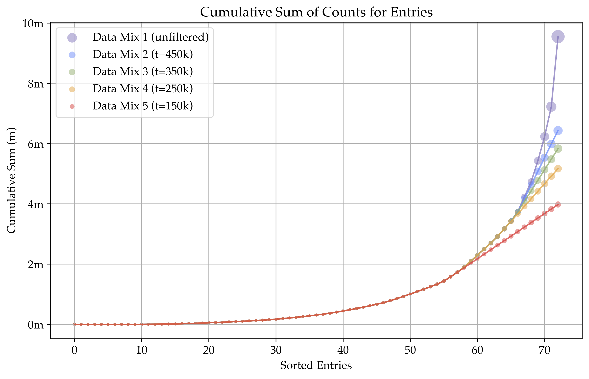
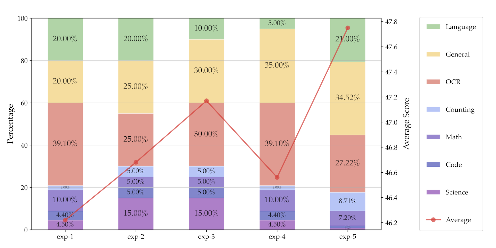

Less is More for Efficient Video Detailed Captioning and a New Benchmark
AuroraCap is a multimodal LLM designed for image and video detailed captioning. We also release VDC, the first benchmark for detailed video captioning, featuring over one thousand videos with significantly longer and more detailed captions than existing datasets.
Observation: We found that image-based LLaVA-like multimodal large language models can be easily adapted to a video one without any additional parameters but only with high-quality video-text instruction data for finetuning.
Efficency: We can reduce the number of token used for image or video before injecting into LLM with marginal performance drop. Therefore, we propose AuroraCap, which is the state-of-the-art open-sourced video captioning model.
Benchmark: We also release VDC, the first benchmark for detailed video captioning, featuring over one thousand videos with significantly longer and more detailed captions than existing datasets.
AuroraCap is a efficientmultimodal LLM designed for image and video detailed captioning.
We also release VDC, the first benchmark for detailed video captioning, featuring over one thousand videos with significantly longer and more detailed captions than existing datasets.
§ Model: AuroraCap: We illustrate how we can reduce the number of token used for image or video before injecting into LLM with marginal performance drop.
§ Benchmark: Video Detailed Caption (VDC): We present VDC, the first benchmark for detailed video captioning, featuring over one thousand videos with significantly longer and more detailed captions than existing datasets.
We provide model weights,
code,
datasets,
and benchmark. We hope our release will inspire and accelerate advancements in multimodal systems and visual representation learning.
AuroraCap: A Efficient Video Detailed Captioner
Architecture
LLaVA.
To effectively leverage the capabilities of both the pre-trained LLM and visual model, LLaVA adapt a simple multilayer perceptron (MLP) projection layer to connect each patch tokens of image features into the word embedding space.
The original LLaVA model is trained by a two-stage instruction-tuning procedure, which first pretraining projection layer for feature alignment and then finetuning end-to-end while freeze the visual encoder.
We adapt some conclusion from recent works for training the model.
We use the the training loss among the last ten iterations in original LLaVA alignment pretraining stage to guidance the ViT and LLM backbones selection.
ViT
ViT Size
LLM
LLM Size
Loss
facebook/dinov2-giant
1,136M
microsoft/phi-2
2.7B
3.3021
openai/clip-vit-large-patch14-336
428M
Qwen/Qwen1.5-0.5B-Chat
0.5B
3.1001
openai/clip-vit-large-patch14-336
428M
microsoft/phi-2
2.7B
2.8067
laion/CLIP-ViT-bigG-14-laion2B-39B-b160k
1,845M
microsoft/phi-2
2.7B
2.7124
facebook/dinov2-giant
1,136M
lmsys/vicuna-13b-v1.5
13B
2.3895
laion/CLIP-ViT-bigG-14-laion2B-39B-b160k
1,845M
internlm/internlm2-chat-7b
7B
2.3437
laion/CLIP-ViT-bigG-14-laion2B-39B-b160k
1,845M
internlm/internlm2-chat-20b
20B
2.2745
laion/CLIP-ViT-bigG-14-laion2B-39B-b160k
1,845M
deepseek-ai/deepseek-llm-67b-chat
67B
2.1572
laion/CLIP-ViT-bigG-14-laion2B-39B-b160k
1,845M
mistralai/Mistral-7B-Instruct-v0.1
7B
2.1569
openai/clip-vit-large-patch14-336
428M
mistralai/Mixtral-8x7B-Instruct-v0.1
8x7B
2.0815
apple/DFN5B-CLIP-ViT-H-14-378
632M
lmsys/vicuna-13b-v1.5-16k
13B
2.0443
laion/CLIP-ViT-bigG-14-laion2B-39B-b160k
1,845M
lmsys/vicuna-7b-v1.5-16k
7B
2.0365
laion/CLIP-ViT-bigG-14-laion2B-39B-b160k
1,845M
mistralai/Mixtral-8x7B-Instruct-v0.1
8x7B
1.9889
openai/clip-vit-large-patch14-336
428M
lmsys/vicuna-7b-v1.5
7B
1.9762
laion/CLIP-ViT-bigG-14-laion2B-39B-b160k
1,845M
meta-llama/Llama-2-13b-chat-hf
13B
1.9708
laion/CLIP-ViT-bigG-14-laion2B-39B-b160k
1,845M
lmsys/vicuna-13b-v1.5
13B
1.9412
apple/DFN5B-CLIP-ViT-H-14-378
632M
lmsys/vicuna-7b-v1.5-16k
7B
1.8679
Table 1: Final training loss during pretraining stage with original LLaVA pretraining data.
Token merging.
To increase the throughput of existing ViT models, Token Merging is proposed to gradually combines similar tokens in a transformer to reduce the number of tokens passing through ViT models.
Token Merging has been proven to be effective on image and video classification tasks even without the need for training.
We conduct frame-wise token merging in AuroraCap, where the feature is extracted by CLIP ViT-H model.
We show token merging visualization examples from COCO, VG, SA-1B as follows:
Figure 1: Token merging visualization. From top to bottom, the image IDs are COCO:COCO-train2014-000000247906, VG:2331508, SA-1B:sa-393200. From left to right, the number of tokens representing the images are 490, 154, 18, and 6.
Training Recipe
Pretraining stage.
Similar to LLaVA, we first align visual features with the word embedding space of LLMs.
To achieve this, we freeze the pretrained ViT and LLM, training solely the vision-language connector.
Consistent with LLaVA-1.5, we employ a two-layer MLP as the projection layer and pretrain on 1.3M image-caption pairs.
Vision stage.
Unlike LLaVA, we next unfreeze the pretrained ViT while freezing the LLM during vision stage and train with the public data among various computer vision tasks (e.g., captioning, object identification, classification, reasoning, VQA, and etc.) to get better generalization.
The motivation for doing this is that CLIP ViT usually performs poorly in aspects such as Orientation and Direction, Positional and Relational Context, Quantity and Count.
However, since the most of the collected datasets lack high-quality and detailed corresponding language descriptions, the labels often consist of only a few words or a short phrase when converted to text.
Therefore, unfreezing the language model at this stage is risky, as it may lead to a degradation in the performance of the language model.
Language stage.
Finally, we conduct end-to-end training, which means all the components are trainable, with the most high-quality public data during language stage.
We mix all the data, including images and videos, captions and instructions, into each mini-batch for training.
To improve caption performance, we duplicate the image and video captioning datasets twice. We remove all the video training data for image-based model model training.
TODO: ADD TRAINING DATASET TABLES
Evaluation
Image Captioning.
We evaluate AuroraCap using CIDEr, BELU-4, BELU-1, METEOR, and ROUGE-L metric on Flickr, NoCaps, and COCO-Cap benchmarks and compare it with LLM-based state-of-the-art methods.
AuroraCap shows good performance under zero-shot settings.
Notice that these benchmarks all contain short captions consisting of a single sentence, so they only partially reflect the model's performance.
Model
Flickr (31,784)
NoCaps (4,500)
COCO-Cap (5,000)
C
B@1
B@4
M
R
C
B@1
B@4
M
R
C
B@1
B@4
M
R
LLaVA-1.5-7B
74.9
71.7
28.4
26.1
52.8
105.5
82.6
40.2
30.3
59.4
110.3
73.0
29.7
29.2
55.5
FrozenBiLM
24.7
—
32.2
—
16.8
—
26.8
LLaVA-1.5-13B
79.4
73.6
30.2
26.6
53.9
109.2
84.2
42.4
30.6
60.3
115.6
74.6
31.5
29.4
56.5
LLaVA-1.6-7B
68.4
69.6
26.6
23.2
50.3
88.4
73.8
34.8
25.9
54.6
99.9
67.7
28.4
25.5
52.4
LLaVA-1.6-13B
66.6
65.2
24.2
22.2
48.8
88.1
68.7
34.0
25.4
54.9
101.8
62.2
27.5
24.6
52.1
MiniCPM-V-3B
66.8
68.0
25.1
27.2
51.0
89.9
79.1
33.2
29.7
55.8
94.2
69.8
23.9
28.3
52.3
DeCap
56.7
—
21.2
21.8
—
42.7
—
—
—
—
91.2
—
24.7
25.0
—
Flamingo-80B
67.2
—
—
—
—
—
—
—
—
—
84.3
—
—
—
—
Chameleon-34B
74.72
—
—
—
—
—
—
—
—
—
120.22
—
—
—
—
GPT-4V
55.38
—
—
—
—
—
—
—
—
—
78.58
—
—
—
—
Gemini-1.5 Pro
82.24
—
—
—
—
—
—
—
—
—
99.82
—
—
—
—
AuroraCap-7B
88.9
75.6
32.8
26.7
55.4
111.4
85.6
44.4
29.9
60.6
120.8
78.0
35.3
28.6
57.2
Table 2: Comparison AuroraCap with SoTA methods on video question answering and classification benchmarks under zero-shot setting. The model size is 7B by default.
Video Captioning.
Although the current video captioning benchmarks are only contains one-sentence captions, to compare with prior work, we similarly evaluate on these benchmarks.
We evaluate AuroraCap on MSR-VTT, VATEX, and ActivityNet Captions and compare it with other methods.
Model
MSR-VTT (1,000)
VATEX (1,000)
C
B@1
B@4
M
R
C
B@1
B@4
M
R
ZeroCap
9.6
—
2.9
16.3
35.4
—
—
—
—
—
DeCap
18.6
—
14.7
20.4
—
18.7
—
13.1
15.3
—
PaLI-3
21.3
—
—
—
—
—
—
—
—
—
Ma et al.
22.1
—
3.5
17.3
28.7
23.9
—
2.8
14.1
23.5
LLaVA-7B
16.9
—
—
—
—
—
—
—
—
—
Video-LLAMA
2.3
—
4.9
16.8
—
3.8
—
4.3
16.3
21.8
AuroraCap-7B
33.1
58.6
21.0
23.9
49.5
33.8
57.1
18.4
19.0
40.8
Table 3: Comparison AuroraCap with SoTA methods on existing video captioning benchmarks under zero-shot setting.
Video Question Answering.
We evaluate AuroraCap on MSVD-QA, ActivityNet-QA, MSRVTT-QA, and iVQA for video question answering tasks.
Although AuroraCap is primarily a captioning model, it achieves competitive performance in these tasks.
Despite token limits, AuroraCap generates longer answers than the ground truth, leading to lower scores.
Model
ANet
MSVD
MSR-VTT
iVQA
Acc
Score
Acc
Score
Acc
Score
Acc
Just Ask
—
—
—
12.2
FrozenBiLM
24.7
—
32.2
—
16.8
—
26.8
Video-LLAMA
12.4
1.1
51.6
2.5
29.6
1.8
—
VideoChat
26.5
2.2
56.3
2.8
45.0
2.5
—
Video-ChatGPT
35.2
2.7
64.9
3.3
49.3
2.8
—
LLAMA-VID
47.4
3.3
69.7
3.7
57.7
3.2
—
Video-LLAVA
45.3
3.3
70.7
3.9
59.2
3.5
—
FreeVA
51.2
3.5
73.8
4.1
60.0
3.5
—
LLAVA-NeXT-Video
53.5
3.2
—
—
—
—
—
MovieChat
45.7
3.4
75.2
3.8
52.7
2.6
—
MovieChat+
48.1
3.4
76.5
3.9
53.9
2.7
—
AuroraCap-7B
61.8
3.8
62.6
3.6
43.5
2.9
55.2
Table 4: Comparison AuroraCap with SoTA methods on video question answering and classification benchmarks under zero-shot setting. The model size is 7B by default.
VDC: A Video Detailed Captioning Benchmark
Benchmark Dataset Curation
Video collection and processing.
We building VDC upon Panda-70M, Ego4D, Mixkit, Pixabay, and Pexels.
Note that the videos used in VDC construction are not included in the training data of AuroraCap.
To ensure balanced data distribution, we allocate equal proportions of different video sources.
We first split the video into clips and apply dense frame extraction, then manually replacing blurry frames with adjacent clear ones.
Structured detailed captions construction pipeline.
We develop a structured detailed captions construction pipeline to generate extra detailed descriptions from various perspectives, significantly extending the length and enhancing the richness compared to previous benchmarks.
The structured captions in VDC encompass not only short and detailed captions but also three additional categories: (1) main object caption; (2) background caption; and (3) camera caption.
To generate detailed, fine-grained, and accurate captions, we leverage GPT-4o to produce video descriptions.
We observed that generating all captions in a single conversation round often introduces hallucinations in the detailed captions.
To address this, we design a hierarchical prompt strategy to efficiently obtain accurate structured captions and detailed captions in two conversation rounds: (1) Structured Captions Generation and (2) Detailed Captions Integration.
Comparison on numerical statistics.
The visual representation in Figure 2 demonstrates the video duration distribution of VDC and the length distribution of structured captions in VDC.
Figure 2: Video length in VDC and distribution of structured caption length.
As illustrated in Table 5, the average length of detailed descriptions in~\benchmark~is significantly longer than in previous benchmarks.
Dataset
Theme
# Video
# Clip
# Caption
# Word
# Vocab.
Ave. Length
MSVD
Open
1,970
1,970
70,028
607,339
13,010
8.67
MSR-VTT
Open
7,180
10,000
200,000
1,856,523
29,316
9.28
ActivityNet
Open
20,000
100,000
100,000
1,340,000
15,564
13.40
S-MiT
Open
515,912
515,912
515,912
5,618,064
50,570
10.89
M-VAD
Movie
92
48,986
55,905
519,933
18,269
9.30
MPII-MD
Movie
94
68,337
68,375
653,467
24,549
9.56
Youcook2
Cooking
2,000
15,400
15,400
121,418
2,583
7.88
Charades
Human
9,848
10,000
27,380
607,339
13,000
22.18
VATEX
Open
41,300
41,300
413,000
4,994,768
44,103
12.09
VDC (ours)
Open
1,027
1,027
1,027
515,441
20,419
500.91
Table 5: Benchmark comparison for video captioning task. Ave. Length indicates the average number of words per caption.
Instruction Tuning Data for Training MLLMs
Previous work highlights the importance of data in training MLLMs, but explicit investigations are limited.
In this study, we gather all available instruction tuning data and examine data curation by enhancing diversity, balancing sources, and improving mixtures.
Data Collection
Collecting Instruction Tuning Data from existing data sources
We first use existing multimodal benchmarks and datasets involving visual interaction data,
such as Visual Question Answering (VQA) and OCR data.
We also collect a small volume of high-quality language-only instruction-following data to maintain its language ability.
Figure 7: Cambrian-7M: A Large-Scale Curated Instruction Tuning Dataset for Training MLLM.
Targeted Internet Data Collection Engine
We also introduce a data engine designed to create large-scale, reliable,
high-quality knowledge-based multimodal instruction tuning data.
Figure 8: Targeted Internet Data Collection Engine.
Cambrian-10M
To this end, we create a large pool of instruction tuning data, which we refer to as Cambrian-10M.
This pool contains approximately 9784k data points, offering a diverse range of data for our work and future research.
We visualize its composition in Figure 7.
Data Curation
Cambrian-10M is a large pool of instruction tuning data sourced from a variety of data sources,
with an unbalanced data ratio between categories.
Here, we take a preliminary step to study data curation by improving data balancing and adjusting data ratios.
Data Balancing
We follow previous work to set thresholds t
for the number of data points from a single data source.
We choose t = 150k, 250k, 350k, and 450k in this section and observe an
elbow effect in Table 3—finding that a threshold between 250k and 350k work the best for Cambrian-10M.

Figure 9: Data Balancing via Applying Thresholds on Data Sources.
Average
General
Knowledge
OCR & Chart
Vision-Centric
150k
53.7
68.0
51.3
45.2
50.5
250k
54.3
68.1
51.5
45.3
52.2
350k
54.3
67.4
51.4
46.0
52.3
450k
54.2
68.0
52.2
45.5
50.7
Table 3: Threshold 𝑡 value between 250k and 350k obtains better performance.
Data Ratio
Given the various capabilities of different types of visual instruction tuning data, it is essential to balance the ratio of these data types.
We conduct pilot experiments with a fixed dataset size of 1350k,
examining the impact of different data ratios on downstream performance.
We visualize the results in Figure 10 and summarize our findings as follows:
(i) Balancing General, OCR, and Language data is crucial.
(ii) Performance on knowledge-intensive tasks is influenced by multiple factors,
often requiring a mix of OCR, chart, reasoning, and general perception.

Figrue 10: Exploring instruction tuning data mixture ratios.
Cambrian-7M
By applying data filtering to Cambrian-10M with our identified data ratio, we create a smaller but higher-quality dataset called Cambrian-7M.
Table 4 showcases the benefits of a well-balanced and carefully curated dataset. Despite having fewer samples, Cambrian-7M demonstrates improved performance.
Average
General
Knowledge
OCR & Chart
Vision-Centric
LLaVA-665K
40.7
64.7
45.2
20.8
32.0
Cambrian-10M
54.8
68.7
51.6
47.3
51.4
Cambrian-7M
55.9
69.6
52.6
47.3
54.1
Table 4: Performance improves with better instruction tuning data curation.
Alleviating the "Answer Machine Phenomenon" via System Prompts
Here, we investigate a phenomenon we term the "answer machine phenomenon."
We observe that a well-trained MLLM may excel at VQA benchmarks, but lack basic conversational abilities and default to outputting short, curt responses (see examples in Figure 5).
To address this, we find that incorporating additional system prompts during training mitigates this phenomenon.
We append prompts such as "Answer the question using a single word or phrase."
before questions that generate a single word or phrase in the response.
We observe that after integrating these system prompts, the model's benchmark performance remains unchanged,
while its conversational ability significantly improves.
Figure 11: Incorporating System Prompt in Instruction Tuning Data alleviates the “Answer Machine Phenomenon”.
State of the Art MLLM Performance
Finally, we leverage the insights from all of our previous studies to train a high-performance Cambrian model.
We train with three different sizes of LLM backbones: LLaMA-3-Instruct-8B, Vicuna-1.5-13B, and Hermes-2-Yi-34B.
Our visual tower uses a combination of four models—SigLIP, CLIP, DINOv2, and OpenCLIP ConvNeXt
(see Combining Multiple Vision Encoders) with the Spatial Vision Aggregator.
We use 2.5M adapter data and Cambrian-7M instruction tuning data (see Data Curation).
We evaluate our models on the categorized benchmarks, and tabulate the results in Table 5. Cambrian-1 exceeds other open-source models such as LLaVA-NeXT and Mini-Gemini, and achieves comparable performance on a number of benchmarks with the best proprietary models such as GPT-4V, Gemini-Pro, and MM-1.
Model
General
Knowledge
OCR & Chart
Vision-Centric
Method
# Vis Tok.
Avg
MMEP
MMB
SEEDI
GQA
Avg
SQAI
MMMUV
MathVistaM
AI2D
Avg
ChartQA
OCRBench
TextVQA
DocVQA
Avg
MMVP
RealworldQA
CV-Bench2D
CV-Bench3D
GPT-4V
UNK.
63.0
1409.4
75.8
69.1
36.8
65.2
75.7
56.8
49.9
78.2
77.4
78.5
64.5
78.0
88.4
62.4
50.0
61.4
64.3
73.8
Gemini-1.0 Pro
UNK.
-
1496.6
73.6
70.7
-
-
79.5
47.9
45.2
-
-
-
65.9
-
-
-
-
-
-
-
Gemini-1.5 Pro
UNK.
-
-
-
-
-
-
-
58.5
52.1
80.3
-
81.3
-
73.5
86.5
-
-
67.5
-
-
Grok-1.5
UNK.
-
-
-
-
-
-
-
53.6
52.8
88.3
-
76.1
-
78.1
85.6
-
-
68.7
-
-
MM-1-8B
144
-
1529.3
72.3
69.9
-
-
72.6
37.0
35.9
-
-
-
-
-
-
-
-
-
-
-
MM-1-30B
144
-
1637.6
75.1
72.1
-
-
81.0
44.7
39.4
-
-
-
-
-
-
-
-
-
-
-
Base LLM: Llama-3-Ins-8B
Mini-Gemini-HD-8B
2880
72.7
1606.0
72.7
73.2
64.5
55.7
75.1
37.3
37.0
73.5
62.9
59.1
47.7
70.2
74.6
51.5
18.7
62.1
62.2
63.0
LLaVA-NeXT-8B
2880
72.5
1603.7
72.1
72.7
65.2
55.6
72.8
41.7
36.3
71.6
63.9
69.5
49.0
64.6
72.6
56.6
38.7
60.1
62.2
65.3
Cambrian-1-8B
576
73.1
1,547.1
75.9
74.7
64.6
61.3
80.4
42.7
49.0
73.0
71.3
73.3
62.4
71.7
77.8
65.0
51.3
64.2
72.3
72.0
Base LLM: Vicuna-1.5-13B
Mini-Gemini-HD-13B
2880
70.7
1597.0
68.6
70.6
63.7
54.1
71.9
37.3
37.0
70.1
60.8
56.6
46.6
70.2
69.8
49.4
19.3
57.5
53.6
67.3
LLaVA-NeXT-13B
2880
69.9
1575.0
70.0
65.6
65.4
53.7
73.5
36.2
35.1
70.0
62.9
62.2
51.4
67.1
70.9
55.9
36.0
59.1
62.7
65.7
Cambrian-1-13B
576
73.7
1,610.4
75.7
74.4
64.3
60.2
79.3
40.0
48.0
73.6
71.3
73.8
61.9
72.8
76.8
62.2
41.3
63.0
72.5
71.8
Base LLM: Hermes2-Yi-34B
Mini-Gemini-HD-34B
2880
76.2
1659.0
80.6
75.3
65.8
62.4
77.7
48.0
43.4
80.5
68.1
67.6
51.8
74.1
78.9
63.8
37.3
67.2
71.5
79.2
LLaVA-NeXT-34B
2880
76.0
1633.2
79.3
75.9
67.1
62.5
81.8
46.7
46.5
74.9
67.7
68.7
54.5
69.5
78.1
64.0
47.3
61.0
73.0
74.8
Cambrian-1-34B
576
76.8
1689.3
81.4
75.3
65.8
67.0
85.6
49.7
53.2
79.7
71.9
75.6
60.0
76.7
75.5
68.5
52.7
67.8
74.0
79.7
Table 5: Cambrian-1 outperforms other open-source models and achieves comparable performance with proprietary models, while using only 576 visual tokens.
Figure 12: Cambrian-1 outperforms other open-source models and achieves comparable performance with proprietary models.
Conclusion
In this paper, we introduce VDC, a novel video detailed captioning benchmark designed to evaluate comprehensive and coherent textual descriptions of video content.
We also propose VDCScore for better evaluating. Besides, by leveraging the token merging strategy, we significantly reduce the computational overhead without compromising performance.
Our extensive evaluation on various video and image captioning benchmarks demonstrated that AuroraCap achieves competitive results, even outperforming state-of-the-art models in some tasks.
We also conduct thorough ablation studies to validate the effectiveness of token merging and other aspects of our model.
We found that the current model performs poorly in terms of the trade-off between performance and the scale of input tokens.
Additionally, there is still room for improvement in camera handling and detailed captioning. We hope that VDC can bring new insights to the video detailed captioning task.
BibTeX
@article{tong2024cambrian,
title={{Cambrian-1: A Fully Open, Vision-Centric Exploration of Multimodal LLMs}},
author={Tong, Shengbang and Brown, Ellis and Wu, Penghao and Woo, Sanghyun and Middepogu, Manoj and Akula, Sai Charitha and Yang, Jihan and Yang, Shusheng, and Iyer, Adithya and Pan, Xichen and Wang, Austin and Fergus, Rob and LeCun, Yann and Xie, Saining},
journal={arXiv preprint arXiv:2406.16860},
year={2024}
}